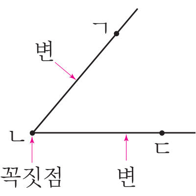
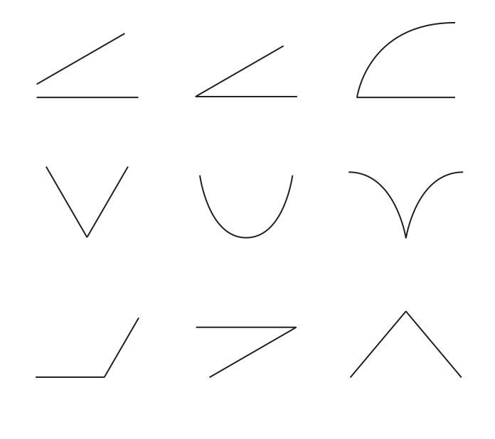
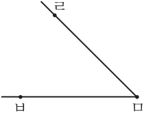

- 개념 정리
- 1
- 2
- 3
- 4
-
-
: 한 점에서 그은 두 반직선으로 이루어진 도형각
ㄱ
변
ㄴ
꼭짓점
변
ㄷ
각 ㄱㄴㄷ
또는 각 ㄷㄴㄱ -
-
1 각을 찾아 표 하세요.
 -
2 각, 각의 꼭짓점, 각의 변을 기호로 나타내 보세요.
ㄹ
ㅁ
ㅂ
각또는각 ㄹㅁㅂ각 ㅂㅁㄹ각의 꼭짓점점 ㅁ각의 변,변 ㅁㄹ변 ㅁㅂ -
3 각을 완성해 보세요.
드래그하여 그어 보세요. -
4 다음 도형이 각이 아닌 까닭을 써 보세요.
까닭예주어진 도형이 각이 아닌 까닭은 한 점에서 그은 두 반직선으로 이루어진 도형이 아니기 때문입니다.